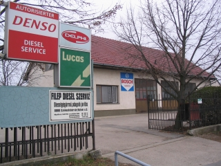
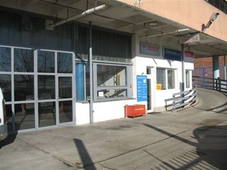

A cég története

A Filep Diesel Szerviz 1990-ben alakult meg. Tulajdonosa, névadója Filep István jármûgépész üzemmérnök, 1978-ban végzett a gyõri Közlekedési és Távközlési Mûszaki Fõiskolán. Kezdetben a leggyakoribb mechanikus mûködésû személy, teher, és erõgép adagolók javitását végezte a mûhely.
1994-ben az angol-francia érdekeltségû LUCAS cég márkaképviseleti jogát nyerte el. Ekkor került megvásárlásra az akkor legkorszerûbb Hartridge-AVM számitógép vezérlésû, folyamatos mérésû próbapad. Gyors, pontos mérése, megbizhatósága, nagyban hozzájárult a szakmai sikerhez. Még ugyanebben az évben bõvült a tevékenységi kör a japán Denso dízel befecs- kendezõ rendszerek javitásával.
1998-ban a Robert Bosch Kft-vel kötött szerzõdés alapján hivatalos márkaszervize lett a mûhely a Bosch és Zexel gyártmányú adagolóknak. Ekkor került megvásárlásra a Bosch EPS 807-KMA802 folyamatos mérésû próbapadja. Ezzel teljessé vált európai dízel adagoló márkaképviseletünk.
A dízel befecskendezõ technika folyamatos fejlõdése, 2002-ben újabb korszerûsítést tett szükségessé. A Bosch próbapad további fejlesztésével lehetõvé vált a Bosch Common Rail szivattyúk javitása, beszabályozása.
2003-ban a Hartridge AVM 2PC tipusú próbad és kiegészitõ egységeinek megvásárlásával megkezdtük a Delphi, Denso és Siemens magasnyomású szivattyúk javítását.

2005-ben nyilt meg a Filep Diesel II. budapesti telephelye. Ez jelenleg a X. kerület, Jegenye u. 15. szám alatt található, a Magyar Rádió volt szerviz- és garázsházában.

2007-ben egy újabb technikai bõvités során megkezdtük a Bosch PDE és UNIT injektorainak a javítását. Ezzel teljessé vált a Bosch javítási technológiánk. Szervizünk kiérdemelte a Bosch Diesel Center minõsitést. A következõ évben érkezett meg a Hartridge gyártmányú CRI-PC berendezés, mellyel a Delphi gyártmányú Common Rail injektorok javítása mellett, azok illesztõ kodolását is el lehet végezni.
A mûhely dolgozói rendszeres továbbképzésben részesülnek az adagoló gyártócégek tanfolyamain. A javításokat minden esetben az itt elsajátított technológiával, célszerszámokkal végezzük el. A beszabályozásokat a gyári beállítási adatok alapján hajtjuk végre.